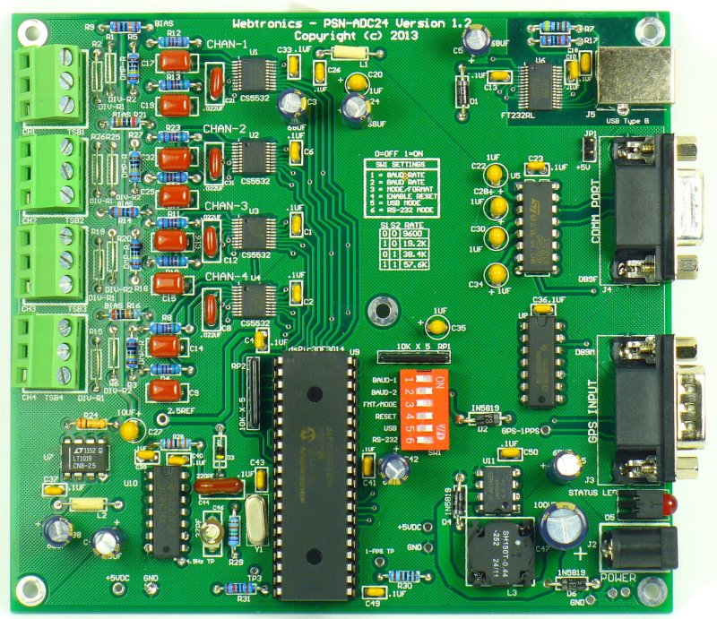
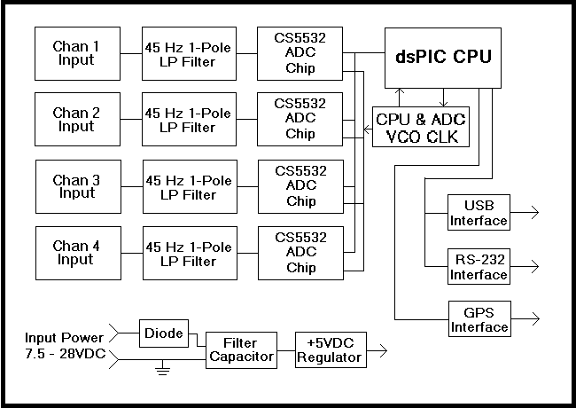
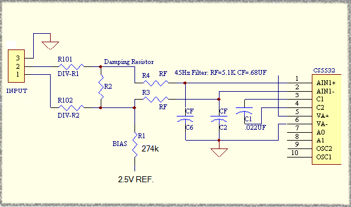
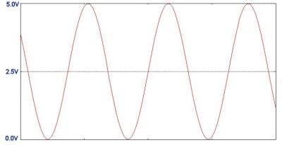
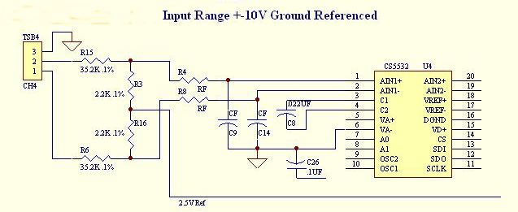
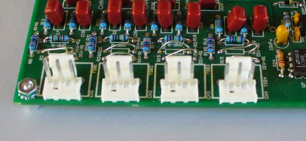

{kind=link}
{kind=link}
[ Top ][ Equipment ] [ Home ] [ How to Order ]
Contact InformationLast Updated: 05/19/2015


The PSN-ADC24 is a 4-Channel 24-Bit Delta-Sigma Analog to Digital Converter specially designed for seismic monitoring and other low frequency data collection. Each channel is digitized using a 24-Bit Delta-Sigma Analog to Digital Converter (Note 1) manufactured by Cirrus Logic. The datasheet for the Cirrus Logic CS5532 ADC chip can be viewed here. Supported sample rate are: 15, 25, 30, 50, 60, 100, 120 and 200SPS.
The PSN-ADC24 board supports both USB and RS-232 Comm Port interfaces. A GPS receiver can be connected to the board for accurate time stamping of the ADC data.
- Earthquake Detection and Location
- Seismic Studies
- Structural Testing
- Vibration Monitoring
- Dynamic Range: > 115dB at 100 Samples Per Second
- Wide Input Power Range: 7 to 28VDC
- Low Power Operation: < 1 watt with Garmin GPS18x Receiver
- ADC Programmable Gain Range: 1, 2, 4, 8, 16, 32 and 64
- RS-232 and USB Interface
- Analog Inputs: 4
- Resolution: 20 Bits at 100 Samples Per Second
- A/D Converter Chip: Cirrus Logic CS5532
- Convert Type: 24-Bit Delta-Sigma
- Sample Rates: 15, 25, 30, 50, 60, 100, 120 and 200SPS
- GPS Support: Garmin GPS 18x LVC or Sure Electronic MG1613S
- Timing Accuracy with GPS Receiver: < 2 Milliseconds
- Board Size: 5.5 x 5.0 inches or 13.97 x 12.7 cm
- PSN-ADC24 without Power Supply - $260.00
- Garmin GPS 18 Timing Receiver - $85.00
- Power Supply Options:
- 110 VAC 60 Hz Wall Mounted Power Supply - $10.00
- Universal 110 VAC to 220 VAC 50 / 60 Hz Power Supply with one Adapter Plug - $25.00
- 6 Foot (1.83m) 9-Pin Male / Female RS-232 Cable - $5.00
- 50 Foot (15.24m) 9-Pin Male / Female RS-232 Cable - $20.00
- Enclosure - $50.00
The PSN-ADC24 digitizer board can operate on a wide input voltage range. The minimum input voltage is ~7.5VDC and the maximum ~28VDC. A diode on the board is used to prevent damage to the board if the input power is reversed. The table below list the power requirements in milliamps with and without the Garmin GPS 18x receiver connected to the sensor board.
Input Voltage No GPS W/GPS 7.50VDC 78ma 118ma 12.0VDC 50ma 73ma 18.0VDC 30ma 48ma 24.0VDC 28ma 40ma
WinSDR (Download) can be used to record data using the PSN-ADC24 digitizer board. This program is included with the purchase of the board. WinSDR will run on Windows XP, VISTA and Win7. Both 32-Bit and 64-Bit version of the program are available.
This Windows DLL Driver and Linux Library can be used by programmers who would like to write their own datalogger program or add the sensor board to an existing program. The DLL Driver zip file or Linux Library includes an example, written in VC++ 8.0, showing how to use the PSNADBoard.DLL file.
Earthworm, a powerful seismic software package that can run under various operating systems, can receive data using the PSN-ADC24 board or WinSDR. See this link for more information.
This channel has a differential input with a input voltage range of +-2.5V or 5V Peak-to-peak when the Programmable Gain Instrument Amplifier gain set to 1. With the gain set to 64, the maximum PGIA gain, the input voltage range is +- 39 millivolts. A differential voltage divider can be placed on the board to allow for larger input voltage swings. See schematic below. R2 can be used as a damping resistor for the sensor or used as one leg of the voltage divider.
The user should use shielded 2 conductor wire when connecting a senor like a Geophone to the input. The + output of the sensor should connect to the screw terminal, or Molex connector pin, 2 and the - output to terminal 1. The shielded part of the wire should be connected to terminal 3. At the other end of the wire the shield can be left open or connected to the metal case of the sensor. Before connecting the shield to the case of the sensor the should check with a Digital Volt Meter to make sure there is no resistance between the case and one of the output coil terminals. If the sensor is going to set right next to the PSN-ADC24 board the user can use a short run of twisted pair wire without the shield. Just leave the ground screw terminal 3 disconnected and only connect terminals 1 and 2 to the sensor's output coil.
If the user is going to drive the input with something other then a coil the put terminals must be biased at +2.5V and swing up to 5V and down to ground. Since the input is differential one terminal needs to be going +V while the other -V.
+/-2.5 Volt Input Schematic

Maximum Input Voltage Range with PGIA Gain = 1

Each channel can be configured to except a +/-10 Volt input signal. This option can be used with sensors that output a ground referenced differential signal. In this configuration the value of the two CF low-pass filter capacitors C9 and C4 are lowered to .1uf. This is needed to keep the same low-pass cutoff frequency of 45Hz do to the larger series resistors R15 and R6. The Programmable Gain Amplifier on the A/D chip must be set to 2 or higher when using this option. Using the 2.2k and 35.2k resistor divider values the measured input range for full scale A/D counts was measured at +-10.63v or a divide by factor of 8.51. WinSDR users should use 0.11751 (1/8.51) in the Channel Settings / Sensor Information / Amp Gain field to compensate for the voltage divider.

Input Connectors CH1 to CH4:
The input connector for each channel can be either a three terminal screw block or three pin Molex .156" (3.94mm) connector (See photo below). Please specify the input connector type when ordering. If you order the board with the Molex connector we will include the mating connector housing (Molex PN 26-60-4030) and crimp terminals.

While looking at the top of the board with J1 to your left the connector pinout is as follows:
- Left-Hand screw terminal or Molex pin 1 = -IN
- Center screw terminal or pin 2 = +IN
- Right-Hand screw terminal or pin 3 = Ground
Power Supply Connector J2:
The power connector on the board is a standard 2.1mm X 5.5mm male jack. Positive voltage must be applied to the center pin. A diode on the board will prevent damage if the power is reversed. The DC input range is 7.5 volts to 28 volts. See power requirements above for more information.
GPS Comm Connector J3:
This connector is a 9 pin, DB-9 male connector used to communicate to a GPS receiver. A straight through serial cable should be used between the A/D board and the GPS's receiver interface board. See this page for a GPS timing system compatible with the PSN-ADC24 board. The connector has the following pinout:
- Pin 1 - CD (Carrier Detect) Input, Used for the 1 PPS signal from the GPS receiver
- Pin 2 - Receiver Data Input from the GPS Receiver
- Pin 3 - Transmit Data Output to the GPS Receiver
- Pin 4 - +5 VDC for Garmin GPS 16/18 Power
- Pin 5 - Ground
- Pin 7 - Ground for Garmin GPS 16
- Pins 6, 8 and 9 - Not Connected
Comm Connector J4:
This connector is a 9 pin DB-9 female connector used to communicate to the PC running WinSDR. A straight through serial cable should be used between the A/D board and the your computer. The connector has the following pinout:
- Pin 1 - Not Connected
- Pin 2 - Transmit Data Output
- Pin 3 - Receive Data Input
- Pin 4 - DTR (Data Terminal Ready) Input - CPU Reset Line
- Pin 5 - Ground
- Pin 6 - Not Connected
- Pin 7 - Not Connected
- Pin 8 - Not Connected
- Pin 9 - Not Connected or +5VDC. See JP1 information below.
The DTR line ( Pin 4 ) is used to reset the CPU on the A/D board. This line should be below 2 VDC for normal operation. If the LED on the board does not come on, it may be do to this line holding the CPU in the reset state. Position 4 of Switch SW1 can be used to disable this feature. If disabled, off position, the host computer can not reset the CPU on the A/D board. When using the RS-232 interface SW1 switch position 5 must be turned on and switch position 6 must be turned off.
USB Interface J5:
This USB Type B connector is used to communicate with the PC. The USB interface chip used on the A/D board is a FTDI FT232RL. Windows or Linux drivers (32-Bit or 64-Bit) can be downloaded from here. When using the USB interface SW1 switch position 6 must be turned on and switch position 5 must be turned off.
Jumper JP1:
The board has one jumper located near Comm Port connector J4. If the jumper is installed +5VDC will be applied to pin 9 of the Comm Port connector. If left off pin 9 will be floating or non connected. The +5VDC can use used to power an external device like a wireless RS-232 to WIFI adapter or wired RS-232 to Ethernet bridge.
Switch SW1 Settings:
The switch SW1 has 6 positions. They are used to control the baud rate, CPU reset and what interface, USB or RS-232, to use.
Switch 1 and 2: Controls the baud rate. See table below.
Switch 3: Currently not used.
Switch 4: If turned on the host computed can reset the CPU on the ADC board using the DTR line.
Switch 5: USB Interface Mode. Switch 6 must be turned off.
Switch 6: RS-232 Interface Mode. Switch 5 must be turned off.
Baud Rate Table
SW1 SW2 Rate Off Off 9600 On Off 19200 Off On 38400 On On 57600
Notes:
- Usable ADC bits dependent on sample rate and on-chip Programmable Gain Instrument Amplifier (PGIA) gain setting.
[ Top ][ Equipment ] [ Home ] [ How to Order ]
Contact Information